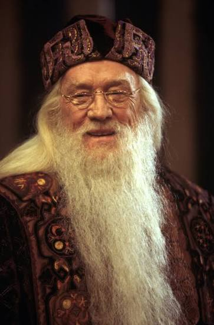

Harry Potter and the Sorcerer's Stone is a fantasy movie released in 2001 and directed by Chris Columbus. It is based on the famous novel written by J.K. Rowling. The story follows a young boy named Harry Potter who discovers that he is a wizard on his eleventh birthday. He then begins his journey at Hogwarts School of Witchcraft and Wizardry, where he meets new friends and learns about the magical world.
The movie tells the story of Harry Potter, an orphan who lives with his cruel relatives, the Dursleys. On his eleventh birthday, he receives a letter inviting him to study at Hogwarts School of Witchcraft and Wizardry. There, he discovers his magical abilities and learns about his past. Together with his best friends, Ron Weasley and Hermione Granger, Harry discovers the mystery of the Sorcerer's Stone. They face different challenges and uncover a dangerous secret involving someone inside Hogwarts. Throughout the adventure, Harry learns about friendship, courage, loyalty, and the importance of doing what is right.
DANIEL RADCLIFFE
Daniel Radcliffe plays Harry Potter, the main character of the movie. He is a young wizard who discovers his identity and begins his magical education at Hogwarts.
EMMA WATSON
Emma Watson plays Hermione Granger, an intelligent and hardworking student at Hogwarts. She helps Harry and Ron solve problems and face challenges throughout their adventure.
RUPERT GRINT
Rupert Grint plays Ron Weasley, Harry's best friend. He comes from a large wizarding family and is known for his humor, loyalty, and bravery.

RICHARD HARRIS
Richard Harris plays Albus Dumbledore, the wise headmaster of Hogwarts. He guides Harry and helps him understand the magical world.
RALPH FIENNES
Ralph Fiennes plays Lord Voldemort, a powerful and dark wizard who seeks to gain control over the wizarding world. He is the main enemy of Harry Potter and wants to destroy him throughout the story.
Harry Potter and the Sorcerer's Stone is one of my favorite movies because of its magical story, interesting characters, and amazing world-building. I enjoy how the movie shows Harry's journey from being an ordinary boy to becoming a young wizard. What I like most about this movie is the friendship between Harry, Ron, and Hermione. Their adventures show the importance of helping one another and staying brave even when facing difficult situations. The magical setting of Hogwarts also makes the movie exciting and enjoyable to watch. Overall, I would recommend this movie to anyone who enjoys fantasy, adventure, and stories about friendship. It is a memorable movie that makes viewers imagine what it would be like to live in a world full of magic.
HUMCOM1 - Web Design
Favorite Movie Webpage